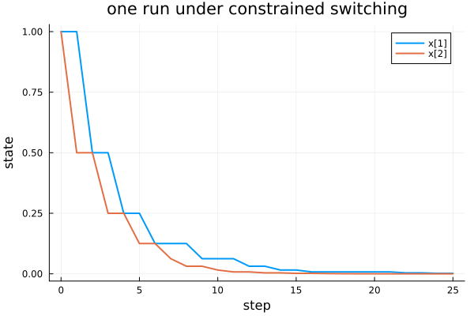

Switched systems: building and running one
A switched linear system is the input to every problem. Two independent questions decide which kind you have: does the plant switch freely between its modes or along the paths of an automaton, and is there a continuous input to design. switched_system builds all four combinations, and simulate runs one along a switching sequence.
import PathCompleteCertificates as PCC
using HybridSystems
using Random
using PlotsTwo modes on the plane: one contracts along y, the other along x. Neither is stable on its own under arbitrary switching, which is what makes the switched case interesting.
A = [[1.0 0.0; 0.0 0.5], [0.5 0.0; 0.0 1.0]]
B = [reshape([1.0, 0.0], 2, 1), reshape([0.0, 1.0], 2, 1)]2-element Vector{Matrix{Float64}}:
[1.0; 0.0;;]
[0.0; 1.0;;]A constraint automaton over the same modes says which switching sequences the plant can produce. This one forbids mode 2 twice in a row.
constraint = GraphAutomaton(2)
add_transition!(constraint, 1, 1, 1)
add_transition!(constraint, 1, 2, 2)
add_transition!(constraint, 2, 1, 1)HybridSystems.GraphTransition{Graphs.SimpleGraphs.SimpleEdge{Int64}}(Edge 2 => 1, 3)The four kinds
A certificate graph must read the system's language: every word over the modes under arbitrary switching, the paths of the automaton under constrained switching. common_graph is the smallest graph that does, one node under arbitrary switching and the automaton itself otherwise.
systems = [
("arbitrary", PCC.switched_system(A)),
("arbitrary, with an input", PCC.switched_system(A, B)),
("constrained", PCC.switched_system(A; automaton = constraint)),
("constrained, with an input", PCC.switched_system(A, B; automaton = constraint)),
]
[(name, PCC.has_input(s), PCC.n_nodes(PCC.common_graph(s))) for (name, s) in systems]4-element Vector{Tuple{String, Bool, Int64}}:
("arbitrary", 0, 1)
("arbitrary, with an input", 1, 1)
("constrained", 0, 2)
("constrained, with an input", 1, 2)The matrices are read back with mode_matrices and input_matrices; mode_matrix gives the product along a sequence of modes.
controlled = systems[2][2]
PCC.mode_matrices(controlled) == A, PCC.input_matrices(controlled) == B(true, true)PCC.mode_matrix(controlled, [1, 2]) == A[2] * A[1]trueThe automaton of a constrained system describes which switching sequences the plant can produce. The path-complete graph handed to a certificate is a different object that happens to share its type; the argument name says which is wanted.
Running one
A certificate quantifies over every admissible switching sequence; a run takes one. Pass the sequence and you get exactly that run.
system = systems[3][2]
trajectory = PCC.simulate(system, [1.0, 1.0], [1, 2, 1, 1, 2])
PCC.switching(trajectory), length(PCC.states(trajectory))([1, 2, 1, 1, 2], 6)Pass a horizon instead and the modes are drawn at random from what the automaton admits: no two consecutive 2s here, by construction.
word = PCC.switching(PCC.simulate(system, [1.0, 1.0], 20; rng = MersenneTwister(42)))
any(word[k] == 2 && word[k + 1] == 2 for k in 1:(length(word) - 1))falseA Trajectory has a plot recipe, available once Plots is loaded.
plot(
PCC.simulate(system, [1.0, 1.0], 25; rng = MersenneTwister(7));
title = "one run under constrained switching",
lw = 2,
)
A run is a sample, never a proof. It can show that a bound is loose or that a trajectory leaves a set; it cannot show that none does. The proofs are the certificates, starting with Stability: a first certificate.
This page was generated using Literate.jl.